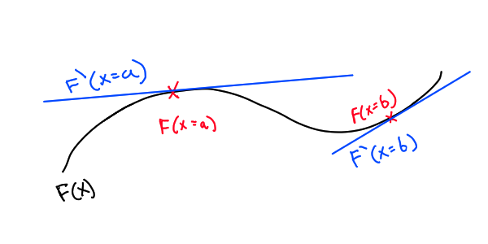
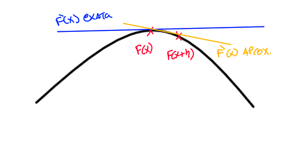
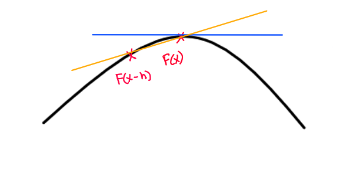
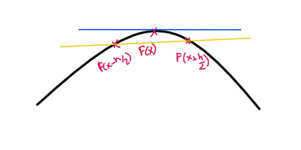
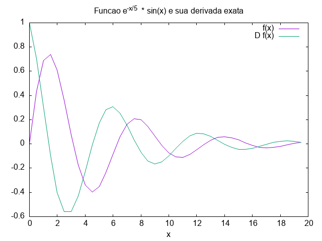
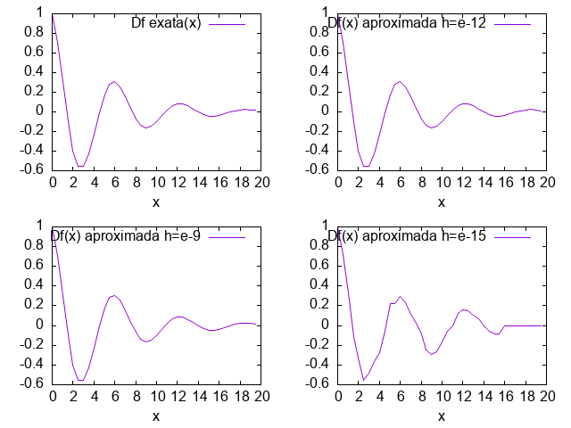
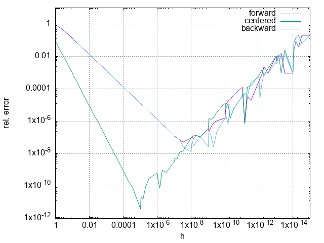

Derivação automática
Recap e aproximação por diferenças finitas
1. Objetivos
Essa serie vai tentar explicar os conceitos e motivações por trás da ideia conhecida por "derivação automática". Começaremos por uma revisão das ideias básicas de calculo (de modo breve), veremos como "computar" aproximações numéricas e expressões simbólicas da derivada de uma função, e as limitações e problemas desses métodos. Finalmente então implementaremos uma pequena biblioteca do que é conhecido por diferenciação automática "Forward mode".
1.1. Nosso plano
- Introdução
- Recap de calculo
- Implementar diferenças finitas
- (talvez) implementar diferenciação simbólica
- Base teorica do autodiff
- Implementação de autodiff
2. Recapitulando: Derivação
O quanto uma função \(F(x) = y\), com \(x, y \subset \mathbb{R}\), muda conforme \(x\) varia é chamado de derivada.
A velocidade é um exemplo claro de como a derivação representa a mudança. Se a posição de um carro que se move é descrita por \(p(t)\), sua velocidade vai ser a derivada da posição em função de \(t\) e sua aceleração a derivada da derivada (a variação da variação), ou em "termos matemáticos":
\begin{equation} Velocidade = v(t) = \frac{dp(t)}{dt} \end{equation} \begin{equation} Aceleração = a(t) = \frac{dv(t)}{dt} = \frac{d^{2}p(t)}{d^{2}t} \end{equation}A derivada de função \(F(x)\) é formalmente definida utilizando limites:
\begin{equation} \frac{dF(x)}{dt} =\lim_{h\to 0} \frac{F(x + h) - F(x)}{h} \end{equation}Para uma função de uma dimensão, graficamente isso pode ser visto como tentar encontrar a reta tangente a um ponto especifico, ou em outras palavras: uma aproximação linear daquela função.

Figure 1: Derivada de \(F(x)\) com \(x=a\) e \(x=b\)
Utilizando as propriedades de limites é possível determinar o comportamento para maioria das operações realizadas nos espaços "normais", é dai que vem as tabelas de derivação. As tabelas de derivação apresentam um conjunto de regras simbólicas para manipular essas expressões, como por exemplo as presentes na Tabela 1.
| Comentário | \(Expr\) | \(\frac{d(Expr)}{dx}\) | Exemplo |
|---|---|---|---|
| Regra da adição | \(F \pm W\) | \(F' \pm W'\) | \(x^{3}-x^{2} \Rightarrow 3\cdot x^{2} - 2\cdot x^{}\) |
| Regra do produto | \(F * W\) | \(F' \cdot W + W' \cdot F\) | \(e ^ {x} \cdot x^{2} \Rightarrow e^{x}\cdot x^{2} + 2\cdot x \cdot e^{x} \) |
| Regra da cadeia | \(F(W(x))\) | \(F'(G(x)) \cdot G'(x)\) | \(sin(x)\circ x^{2} \Rightarrow\ cos(x^{2}) \cdot 2 \cdot x\) |
| Regra para reciproca | \(\frac{1}{F}\) | \(\frac{-F'}{F^{2}}\) | \(\frac{1}{x} \Rightarrow -\frac{1}{x^{2}}\) |
| Regra para polinômios | \(x ^ {n}\) | \(n \cdot x^{n - 1}\) | \(x ^ {5} \Rightarrow 5 \cdot x^{4}\) |
| Constantes, números | K | 0 | \(42 \Rightarrow 0\) |
| ⋯ | ⋯ | ⋯ | ⋯ |
2.1. Notação
Calculo possui uma historia um pouco complicada com notações. Existem varias, e dependendo da situação convém usar uma ou outra. Todas são um pouco confusas. A derivada de uma função \(F(x)\) pode ser representada:
- Com um apóstrofo ou similar: \(F'(x)\)
- Com um circulo sobre o nome da função: \(\dot F\)
- Como um operador D(iferencial): \(D F(x)\)
- Como uma especie de razão entre a função e um "infinitesimal": \( \frac{dF} {dx} \)
Quase todas podem ser estendidas para tratar de derivadas de ordem maior e/ou derivadas parciais, que não cobriremos aqui.
Para saber mais:
- Introdutório : https://www.youtube.com/watch?v=6v0SMTZ8hkU
- Introdutório : Um Curso de Cálculo - Vol. 1, Hamilton Luiz Guidorizzi
- Avançado / rigoroso : Calculus on Manifolds, Michael Spivak, 1965
2.2. Diferenças finitas
Para de fato calcularmos essa função em um ponto utilizando computadores, podemos utilizar uma aproximação. Isso é feito dando valores pequenos para \(h\) em vez de usar um limite. Essa aproximação então é:
\begin{equation} F'(x) \approx \frac{F(x + h) - F(x)}{h} \ \end{equation} A equação anterior aproxima a derivada como um "passo" para frente, mas é possível também aproximá-la como um passo para trás:
\begin{equation} F'(x) \approx \frac{F(x) - F(x-h)}{h} \ \end{equation} Ou meio passo para frente e meio para trás:
\begin{equation} F'(x) \approx \frac{F(x + \frac{h}{2}) - F(x - \frac{h}{2})}{h} \ \end{equation} As formulas que envolvem somente uma direção se comportam de modo similar em precisão e estabilidade, mas a diferença "centrada" tem um erro menor.
2.3. Implementação de diferenças finitas
Primeiramente convém definir algumas funções que vão nos auxiliar a extrair e plotar os resultados.
2.3.1. Funções auxiliares
(define (range from by to) ;; Função que gera um intervalo numerico de [from] em passos [by] até [to]. (if (>= from to) '() (cons from (range (+ by from) by to)))) (define (log10-range start decades n-per-decade) ;; função que gera um intervalo de [n-per-decade] pontos espaçados de modo uniforme ;; em uma decada, em (- [decades] [start]) decadas. (let ([decades (range start 1 decades)] [points (range 1 (/ 10 n-per-decade) 10)]) (apply append (map (lambda (decade) (map (lambda (point) (* point (expt 10.0 decade))) points)) decades)))) (define (relative-error aproximation actual-value) ;; calcula o erro relativo entre duas coisas. err = (abs (a - b) / a) (abs (/ (- aproximation actual-value) actual-value))) (define (print-row-with-spaces lst) ;; imprime uma lista [lst] com seus elementos separados por " " e termina com \n. (format #t "~{~a~^ ~}~%" lst)) (define (print-dataset . list-of-lists) ;; imprime o dataset todo (apply for-each (lambda x (print-row-with-spaces x)) list-of-lists))
2.3.2. Função de exemplo
Para demonstrar as formas de se calcular a aproximação por diferenças finitas, convém escolher uma função. Escolhi, por nenhuma razão especifica, utilizar um seno amortecido:
\begin{equation} \sin\left(x\right) \cdot e^{\frac{-x}{5}} \end{equation}Que tem como derivada:
\begin{equation} -\frac{\mathrm{e}^{-\frac{x}{5}} \left(\sin\left(x\right) - 5 \cos\left(x\right)\right)}{5} \end{equation}Suas definições em scheme são representadas abaixo.
(define (my-test-func x) ;; e^(-x/5) * sin(x) (* (sin x) (exp (/ (* -1 x) 5)))) (define (my-test-derivative x) ;;-(e^(-x / 5) * (sin(x) - 5 * cos(x))) / 5 (* -1 (/ (* (exp (/ (* -1 x) 5)) (- (sin x) (* 5 (cos x)))) 5)))
Os dois blocos de codigo abaixo gravam e leem os resultados dessa função e sua derivada em um arquivo, e plotam o resultado para \([0,20]\). O processo de escrita no arquivo é realizada pelo org-mode que executa o codigo scheme, coleta a saida, e salva. Já a leitura e plotagem são feitas no gnuplot (voce também pode usar python, R ou sua linguagem favorita para plotar).
(let* ([dominio (range 0 0.5 20)] [plot-test-func (map my-test-func dominio)] [plot-test-Dfunc (map my-test-derivative dominio)]) (print-dataset dominio plot-test-func plot-test-Dfunc))
# Script gnuplot reset set title "Funcao {e^{-x/5}} * {sin(x)} e sua derivada exata" set xlabel "x" #plota a as duas funções plot data u 1:2 w l title "f(x)", data u 1:3 w l title "D f(x)"

(define (aprox-d f h x) (/ (- (f (+ x h)) (f x)) h)) (let* ([dominio (range 0 0.5 20)] [plot-exact-Dfunc (map my-test-derivative dominio)] [plot-aprox-Dfunc-e9 (map (lambda (x) (aprox-d my-test-func 1e-9 x)) dominio)] [plot-aprox-Dfunc-e12 (map (lambda (x) (aprox-d my-test-func 1e-12 x)) dominio)] [plot-aprox-Dfunc-e15 (map (lambda (x) (aprox-d my-test-func 1e-15 x)) dominio)]) (print-dataset dominio plot-exact-Dfunc plot-aprox-Dfunc-e9 plot-aprox-Dfunc-e12 plot-aprox-Dfunc-e15))
# Script gnuplot reset set xlabel "x" set multiplot layout 2,2 columns #plota a as duas funções plot data u 1:2 w l title "Df exata(x)" plot data u 1:3 w l title "Df(x) aproximada h=e-9" plot data u 1:4 w l title "Df(x) aproximada h=e-12" plot data u 1:5 w l title "Df(x) aproximada h=e-15" unset multiplot

# Script gnuplot reset set title "Erro relativo em relacao ao tamanho de h" set xlabel "h" set logscale x 10 set logscale y 10 #plota a as duas funções plot data u 1:2 with line title "Erro relativo de DF(x)"
